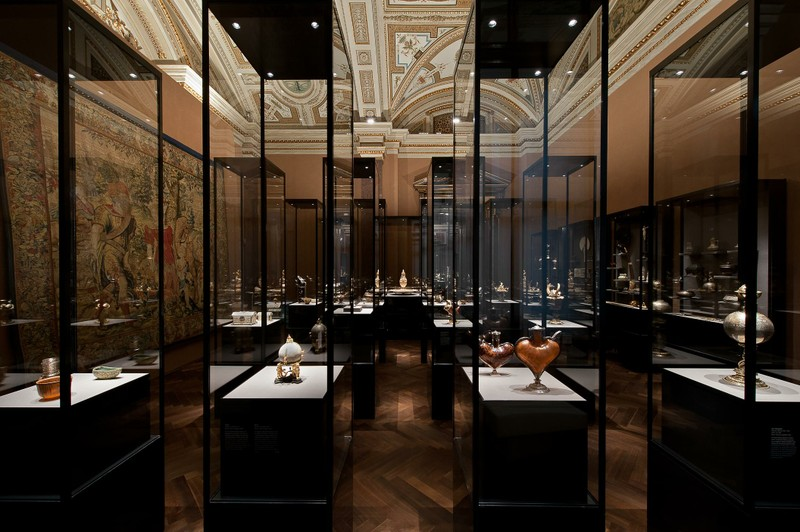
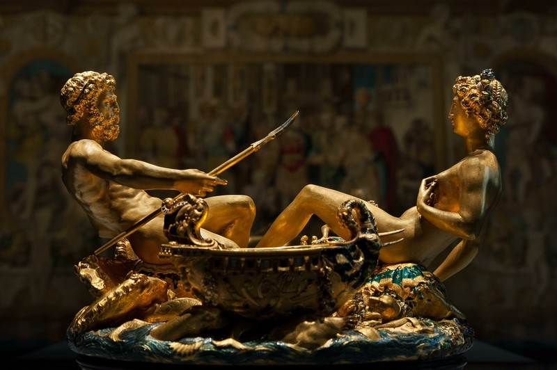
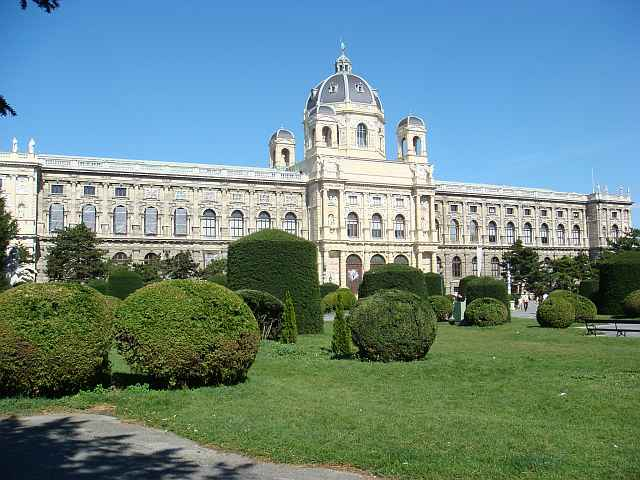
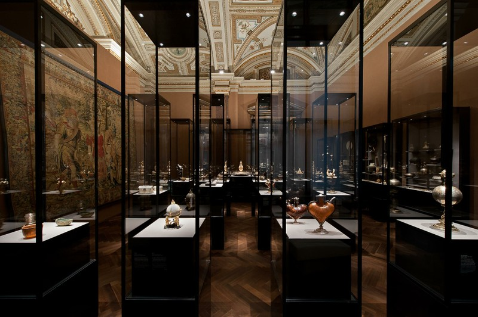
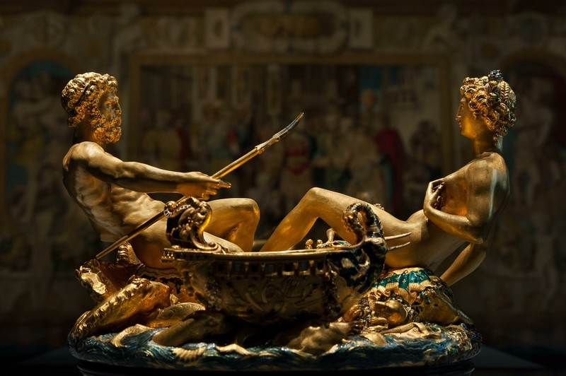
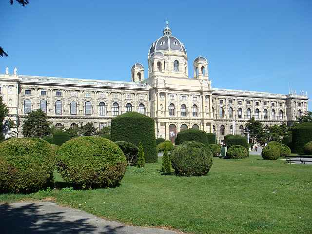

KUNSTHISTORISCHES MUSEUM
Il Kunsthistorisches Museum (in italiano Museo della Storia dell'Arte), che nel 2012 ha contato 1.351.940 visitatori,
è uno dei principali musei di Vienna ed uno dei più antichi e ricchi al mondo. L'edificio principale, sormontato da una cupola
ottagonale alta 60 metri, si trova in Maria Theresien-Platz, lungo la Ringstraße che circonda il distretto di Innere Stadt.
Il Museo venne inaugurato ufficialmente il 17 ottobre 1891 alla presenza dell'imperatore Francesco Giuseppe I d'Asburgo dopo oltre
trent'anni dalla prima commissione. Dal 22 ottobre venne aperto al pubblico. L'edificio si affaccia sulla Maria-Theresien-Platz,
specularmente al Naturhistorisches Museum (Museo storico-naturalistico). I due musei vennero commissionati dall'imperatore nel
1858 per contenere l'immensa collezione di opere d'arte degli Asburgo e di rendere il loro patrimonio accessibile a tutti.
Il concorso per la realizzazione degli edifici venne bandito nel 1867 e vinto dagli architetti Carl von Hasenauer e Gottfried Semper.
La prima pietra venne posata, senza troppe cerimonie, il 27 novembre 1871. Le facciate richiamano lo stile rinascimentale italiano
e gli interni sono decorati con marmo, ornamenti di stucco e d'oro e pitture.
Una delle più importanti sculture del museo, la Saliera di Benvenuto Cellini, è stata rubata l'11 maggio 2003 e recuperata il
21 gennaio 2006 in una scatola, sepolta sotto terra, in una foresta vicino alla città di Zwettl, in Austria. È stato il più
grande furto d'arte nella storia austriaca.
La collezione originaria del museo appartiene agli Asburgo, in modo particolare per quanto riguarda i ritratti e le armature di
Ferdinando II d'Austria, la collezione dell'imperatore Rodolfo II d'Asburgo e la collezione di pitture di Leopoldo Guglielmo d'Asburgo.
Il museo espone opere di Antonello da Messina, Giovanni Bellini, Correggio, Giorgione, Lorenzo Lotto, Andrea Mantegna, Tintoretto,
Veronese, Guido Reni, Jan Brueghel il Vecchio, Jan Brueghel il Giovane, Giuseppe Arcimboldo, Agnolo Bronzino, Antonio Canova,
Michelangelo Merisi da Caravaggio, Albrecht Dürer, Gustav Klimt, Parmigianino, Raffaello Sanzio, Pieter Paul Rubens, Jan Steen,
Jan van Eyck, Diego Velázquez, Johannes Vermeer, Johann Gottfried Auerbach.
Oltre ai dipinti sono presenti anche altre collezioni: la collezione egizia orientale (Ägyptisch- Orientalische Sammlung),
la collezione delle antichità romane e greche (Antikensammlung), quella della scultura e delle arti decorative (Kunstkammer),
il gabinetto numismatico (Münzkabinett), la biblioteca (Museumsbibliothek).
Una serie di ritratti in miniatura di esponenti della famiglia Gonzaga è custodita all'interno del museo.
Essa prende nome e proviene dal castello di Ambras di Innsbruck, in Austria e fu voluta da dall'arciduca Ferdinando II d'Austria,
noto collezionista di ritratti e di armature. La pinacoteca venne incrementata dalla seconda moglie del nobile, Anna Caterina Gonzaga,
figlia del duca di Mantova Guglielmo.
La raccolta presenta sia personaggi appartenuti al ramo principale che rappresentanti dei rami cadetti della dinastia.
Dei trentatré ritratti, eseguiti da pittori di corte, cinque appartengono alla linea primogenita (tra i quali Guglielmo e
Vincenzo Gonzaga), sei della linea di Guastalla, quattro della linea di Vescovato, otto della linea di Sabbioneta e Bozzolo,
cinque del ramo di Luzzara e cinque del ramo di Castel Goffredo, Castiglione e Solferino.